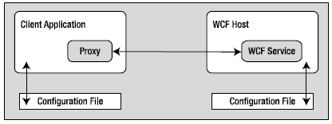

When you build a WCF distributed system, you will typically do so by creating three interrelated assemblies:
As mentioned previously, the WCF service assembly is a .NET class library that contains a number of WCF contracts and their implementations. The key difference is that the interface contracts are adorned with various attributes that control data type representation, how the WCF runtime interacts with the exposed types, and so forth.
The second assembly, the WCF host, can be literally any .NET executable. As you will see later in this chapter, WCF was set up so that you can exposed services easily from any type of application (e.g., Windows Forms, a Windows service, and WPF applications). When you build a custom host, you use the ServiceHost type and possibly a related *.config file. The latter contains details regarding the serverside plumbing you wish to use. However, if you use as the host for your WCF service, you don’t need to build a custom host programmatically because IIS will use the ServiceHost type behind the scenes
Note It is also possible to host a WCF service using the Windows Activation Service (WAS); you can consult the .NET Framework 4.0 SDK documentation for details.
The final assembly represents the client that makes calls into the WCF service. As you might expect, this client can be any type of .NET application. Similar to the host, client applications typically use a client-side *.config file that defines the client-side plumbing. You should also be aware that you can easily have a client application written in another framework (e.g., Java and) if you build your WCF service using HTTP-based bindings.
Figure 25-4 illustrates the relationship between these three interrelated WCF assemblies(from a high level). Behind the scenes, several lower-level details are used to represent the required plumbing (e.g., factories, channels, and listeners). These low-level details are usually hidden from view; however, they can be extended or customized if required. In most cases, the default plumbing fits the bill sufficiently.
Figure 25-4 A high-level look at a typical WCF application
It is also worth pointing out that using a server-side or client-side *.config file is technically optional. If you wish, you can hard-code the host (as well as the client) to specify the necessary plumbing (e.g., endpoints, binding, and addresses). The obvious problem with this approach is that if you need to change the plumbing details, you will need to recode, recompile, and redeploy a number of assemblies. Using a *.config file keeps your code base much more flexible because changing the plumbing is as simple as updating the file’s content and restarting the application. On the other hand, programmatic configuration allows an application more dynamic flexibility—it can choose how to configure the plumbing based on if-tests, for example.